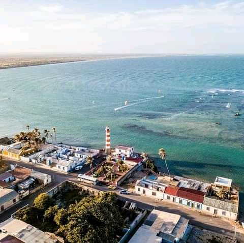
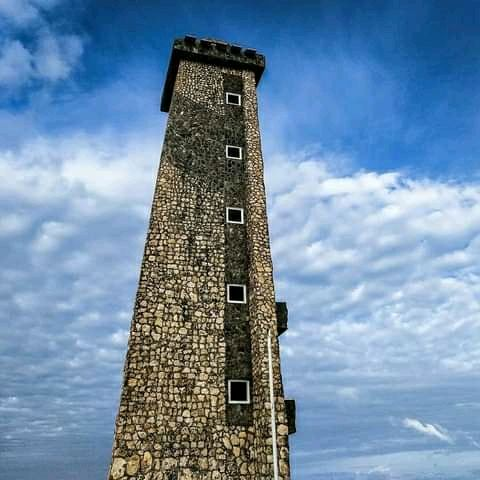

Paraguaná, cuenta con una gran diversidad de hermosos paisajes y lugares ideales para hacer turismo:

1Cerro De Santa Ana.
Es un monumento natural ubicado en el centro de la península de Paraguaná al norte del estado Falcón en jurisdicción de los municipios Falcón y Carirubana, entre las poblaciones de Santa Ana y Buena Vista. Cuenta con una superficie de 1900 hectáreas y alcanza una altura máxima de 830 msnm. Fue declarado Monumento Natural el 14 de junio de 1972.
2Adícora.
Es una playa poco profunda protegida por arrecifes, aguas frescas, con mayor oleaje que la zona occidental. En la población de Adícora se encuentran varias posadas, al igual que residencias de alquiler para el alojamiento y diversidad de restaurantes. Debido a los fuertes vientos que allí se encuentran, se ha convertido en un centro internacional para la práctica del kiteboarding y windsurfing. Es un importante destino turístico, cuyos temporadistas escogen los asuetos de Semana Santa, Carnavales y el mes de agosto principalmente por sus playas, posadas, restaurantes y lo acogedor del pueblo y sus casa de tipo coloniales.
3Cabo San Román.
Es el punto más septentrional de la Venezuela continental y desde donde se logran ver las luces de Aruba y Curazao en la noche. En el cabo San Román hay numerosos acantilados y médanos a la orilla del mar. De estos el más célebre es el Médano Blanco.